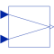

LinearDependencyOutput a linear combination of the two inputs |

|
Information
This information is part of the Modelica Standard Library maintained by the Modelica Association.
Determine the linear combination of the two inputs: y = y0*(1 + k1*u1 + k2*u2)
Note, for y0=0 the output is always zero.
To improve the implementation, the formula will be changed (non-backwards compatible) in the future: y = y0 + k1*u1 + k2*u2
Parameters (3)
| y0 |
Value: 0 Type: Real Description: Initial value |
|---|---|
| k1 |
Value: 0 Type: Real Description: u1 dependency |
| k2 |
Value: 0 Type: Real Description: u2 dependency |
Connectors (3)
| u1 |
Type: RealInput Description: Connector of Real input signal 1 |
|
|---|---|---|
| u2 |
Type: RealInput Description: Connector of Real input signal 2 |
|
| y |
Type: RealOutput Description: Connector of Real output signal |
Used in Examples (1)
|
Modelica.Blocks.Examples
Demonstrates the usage of blocks from Modelica.Blocks.Math |